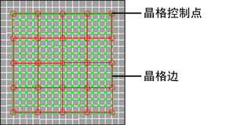
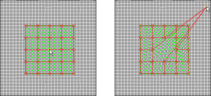

“UV 晶格工具”(UV Lattice Tool)允许用户使用 2D 晶格变形器同时编辑许多 UV 布局，从而实现高级 UV 控制。
使用晶格操纵器编辑 UV 布局
- 在场景视图中，选择要操纵的 UV 所属的多边形或细分曲面对象。
- 选择。
此时将显示 UV 编辑器。
- 在 UV 编辑器的视图中，切换到 UV 模式。
在视图中单击鼠标右键，然后从显示的标记菜单中选择 UV。
- 选择，或在“UV 工具包”(UV Toolkit)的部分中，单击“晶格”(Lattice)按钮。
- 在“UV 编辑器”(UV Editor)中，框选要操纵的 UV（也可以在激活该工具之前执行此操作）。
UV 晶格操纵器会显示在目标 UV 上及其周围。
- 通过单击晶格边或控制点，可以选择影响想要操纵的 UV 区域的这些晶格边或控制点。
按住 Shift 键，并单击晶格边或控制点以从选择中包含或移除它们。
 - 拖动选定的晶格边或控制点以变形目标 UV 的布局。
